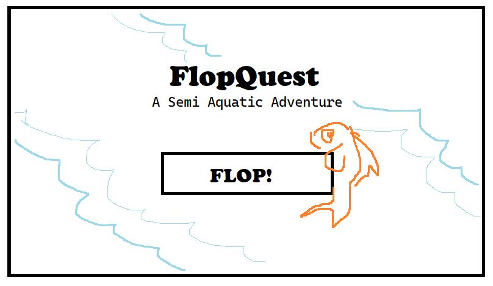
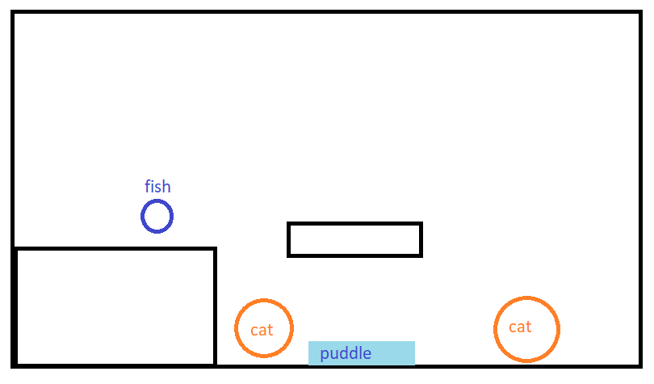

A Semi-Aquatic Adventure
See documentation at the bottom!
In FlopQuest, you play as a dehydrated fish on questing to find a mythical glass of water. Along the way, you meet feline adversaries that will attack you and puddles that will replenish your health.
FlopQuest may be categorized as a 2D adventure platformer with some puzzle elements. The fish navigates a vertical field, jumping from platform to platform while managing health and dodging enemies.
Since FlopQuest will use the keyboard as its means of player control, it is designed for desktop/keyboard play. Currently, there are no plans for mobile use, ex: having on-screen buttons that the player can tap/click to move around.
I'm not knowledgable on the available external libraries to aid in developing this game, but I might do additional research and add them in. All final external libraries/resources will be documented in the final documentation of FlopQuest. I do plan on making the visual assets myself, but I will also consider using free assets if
The player is able to move around and jump, which is used in navigating the platforms. They may also interact with some objects in the area to solve platforming puzzles by pushing them into place.
FlopQuest features a dehydrated fish on a mission to find a glass of water. The theme doesn't really have anything to do with the gameplay and is mostly for aesthetic purposes.
In terms of aesthetics, I plan on having pixelized character sprites and keeping the general color palette bright and vibrant. I personally prefer pixel graphics and, since I intend on making the sprites myself, they're easier to make and animate when compared to higher quality graphics/images. The color palette is bright since this is a silly, lighthearted game about a fish trying to find water, and I want the general appearance to reflect this.
Note: I'm not sure of how high-level these mockups will be, so I've made simple sketches in MSPaint for the time being. The first image is a mockup of how the menu screen will look like and the second is an idea of how the main game will appear.


This game was not as developed as I would have liked it to be.
The final result was a much simpler maze "adventure" where the player controls a fish in a maze while trying to get to the glass of water at the end. The majority of the code in this instance was taken from the Adventure! homework, but I was able to add some core mechanics (health timer, water/ puddle collection) that I'm proud of. All assets were created by myself, with the exception of the styling for the buttons on the title screen, which I retrieved from UIverse by adam giebel.
The health timer and puddle mechanic mentioned above were specific points of improvement given to me by my peers in our in-class critique session. As well, I implemented level progression (FlopQuest only has 2 levels for the time being) with win-lose conditions.
A lot of my progress was impeded by time limitations. Some additional features I wanted to include, namely sound effects and background music, weren't included simply because I didn't have time. Enemies or some other moving agent in the game, was also excluded for this reason. This was further heighted by bugs and syntax errors that would pop up in code.